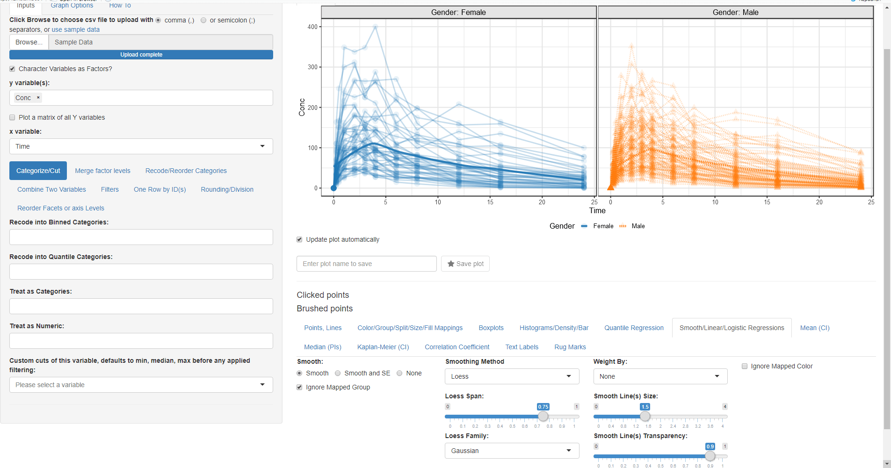

vignettes/introduction_to_ggquickeda.Rmd
introduction_to_ggquickeda.RmdThis R package/Shiny app is a handy interface to
ggplot2/table1. It enables you to quickly
explore your data to detect trends on the fly. You can do scatter plots,
dotplots, boxplots, barplots, histograms, densities and summary
statistics tables. For a quick overview using an older version of the
app head to this
Youtube Tutorial . This intro will walk you through making a plot
and a summary table.
# Install from CRAN:
install.packages("ggquickeda")
library(ggquickeda)
run_ggquickeda()After launching the app with run_ggquickeda() and
clicking on use sample_data: The app will load the built-in example
dataset and map the first column to y variable(s) and the second column
to x variable and a simple scatter plot with points will be
generated:
select sample_df.csv
We want to look at the Column Conc (concentration of drug in blood) versus Time joining each Subject data with a line:
select sample_df.csv
Wait something is wrong! We forgot to tell the app that we want to group by ID.
select sample_df.csv
While we are on this tab let us map Color By:, Column Split:, Linetype By: and Shape By: to Gender
select sample_df.csv
Now we want to add a loess trend line: * Go to Smooth/Linear/Logistic Regressions and click on the Smooth radio button:
 After we made the plot we wanted, now we
are interested to do a summary statistics of Weight and Age columns by
Gender this will require the following steps: * Change the mapped y
variable(s) to Weight, Age and Race * Change the mapped x variable to
Gender * Go to One Row by ID(s) and select ID so we
keep one row by ID
* Go to Descriptive Stats tab (notice how you can use
html codes for line breaks, superscript and subscript in the Quick HTML
Labels. e.g. Weight(kg))
select sample_df.csv
Now launch the application on your own data that is already in R and
start exploring it:
run_ggquickeda(yourdataname)
Alternatively launch the application without any data and navigate to
your csv file: run_ggquickeda()